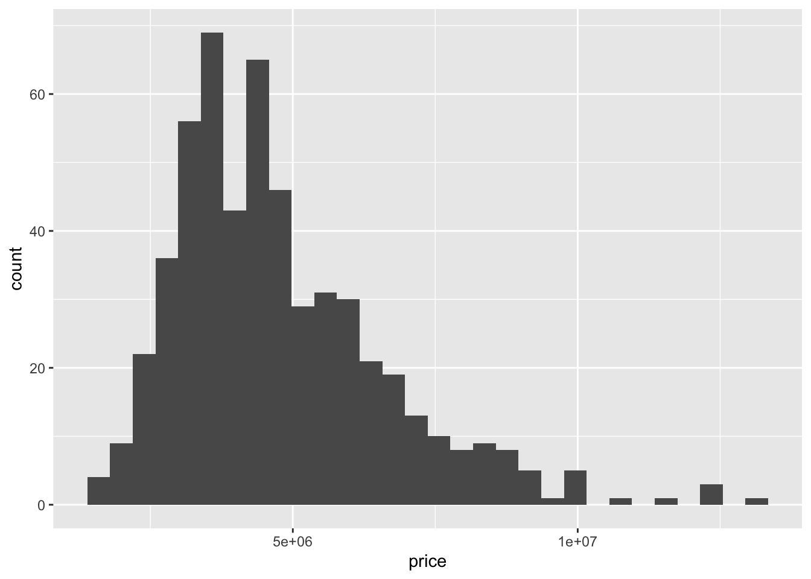
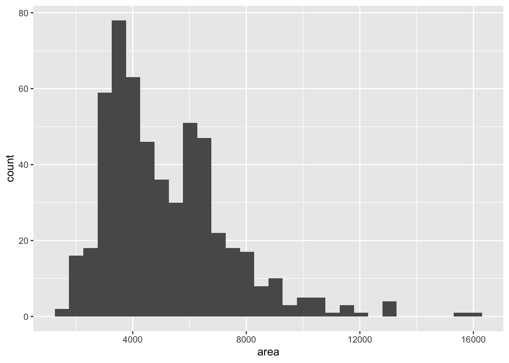
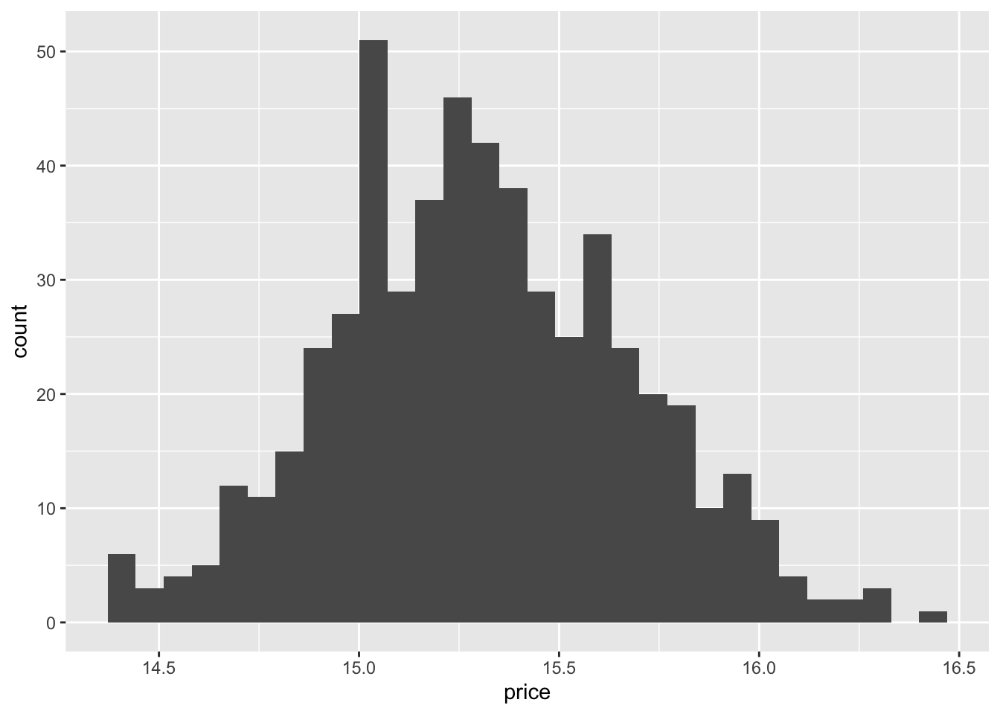
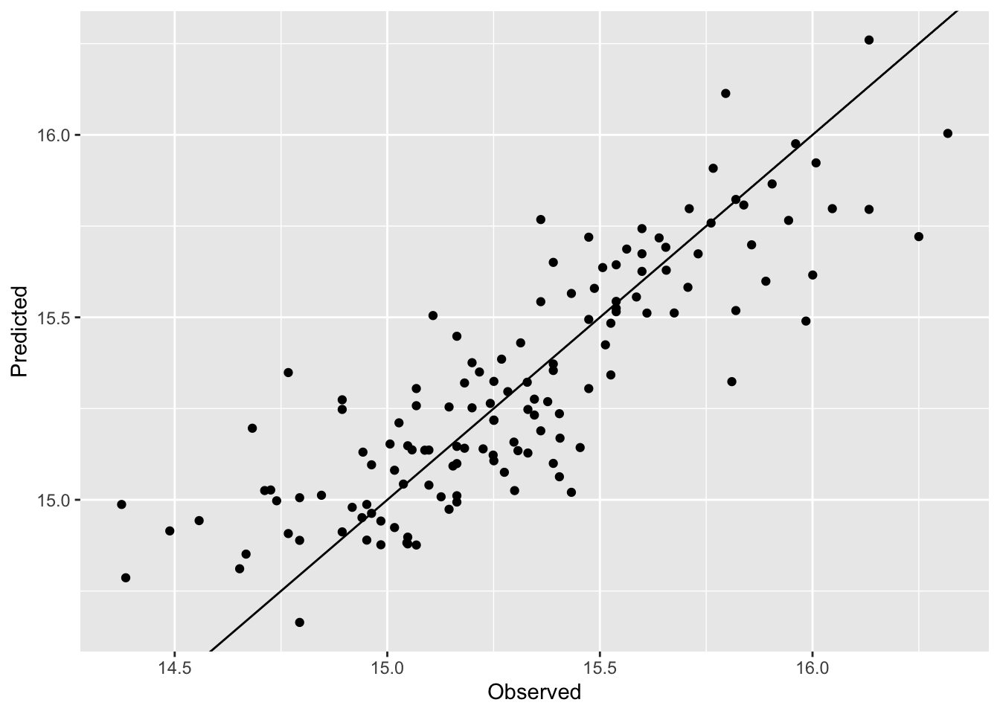

install.packages("tidymodels")GEOG 5160 6160 Lab 02
Introduction
In this lab, we will introduce the basics of machine learning in R. We will repeat the example shown in class in which a linear model was built to predict housing prices for a set of individual houses. Before starting the lab, you will need to set up a new folder for your working directory. Go to your geog5160 folder now and create a new folder for today’s class called lab02. Now use setwd() to make this folder your working directory.
R has a large number of packages for individual machine learning algorithms, but also has a couple of packages that are designed to manage a machine learning workflow. These packages take care of setting up training and testing data, as well as evaluating the models. We will see in later labs that these can also be used to optimize the set up of the model. The package we will use is called tidymodels, which contains a series of individual packages and functions focusing on different parts of the machine learning framework:
- parsnip: standardized interface to algorithms
- yardstick: evaluation metrics
- recipes: functions for preprocessing data
- rsample: functions for crosss-validation
- tune: functions for tuning models
- workflow: functions for setting up pipelines
As a reminder, packages can be installed in RStudio by going to the ‘Packages’ tab and clicking on the [Install] button, or from the menu [Tools]-> [Install packages…]. You can also install these from the console window by typing
More details about the tidymodels package and the associated project can be found here.
Objectives
- Understand how to set up a basic linear model in R
- Use the tidymodels package to design a ML task, a learner and a resampling strategy for validation
- Explore how to run both regression and classification tasks
It is highly recommended to use scripts or Quarto documents to store your R code - this will allow you to easily change and modify it and submit the exercise.
Data
For today’s lab, we will use a data set of house prices from the file Housing_Price_Data.csv, which is available through Canvas. The data are taken from a Kaggle dataset here.
The csv file contains the following columns most of which should be self-explanatory), with values for each California district taken from the 1990 census:
price: House price in $’s (possibly not dollars…)area: House are in sq ftbedrooms: number of bedroomsbathrooms: number of bathroomsstories: number of storiesmainroad: On main road (yes/no)guestroom: Is there a guestroom? (yes/no)basement: Is there a basement? (yes/no)hotwaterheating: Is there a hot water heater? (yes/no)airconditioning: Is there air conditioning? (yes/no)parking: How many parking spots (0-3)prefarea: In ‘preferred’ area (yes/no)furnishingstatus: (Furnished/Semi-furnished/Unfurnished)
The goal will be to build a model that can predict the price based on the other variables (or features).
Setting up your project
Start by creating a working directory for today’s lab (e.g. called ‘lab02’), and move the Housing_Price_Data.csv to your datafiles folder. Next start RStudio (or R), and change your working directory to this directory. Check that you are in the correct place by typing the following in the console window:
list.files("../datafiles")And make sure that you see Housing_Price_Data.csv listed. Now load the file into R:
dat <- read.csv("../datafiles/Housing_Price_Data.csv")Finally, make sure to load the tidymodels package (if you are using a script or Quarto, make sure that this is added to your document)
library(tidymodels)── Attaching packages ────────────────────────────────────── tidymodels 1.2.0 ──✔ broom 1.0.7 ✔ recipes 1.1.0
✔ dials 1.3.0 ✔ rsample 1.2.1
✔ dplyr 1.1.4 ✔ tibble 3.2.1
✔ ggplot2 3.5.1 ✔ tidyr 1.3.1
✔ infer 1.0.7 ✔ tune 1.2.1
✔ modeldata 1.4.0 ✔ workflows 1.1.4
✔ parsnip 1.2.1 ✔ workflowsets 1.1.0
✔ purrr 1.0.2 ✔ yardstick 1.3.1Warning: package 'broom' was built under R version 4.4.1── Conflicts ───────────────────────────────────────── tidymodels_conflicts() ──
✖ purrr::discard() masks scales::discard()
✖ dplyr::filter() masks stats::filter()
✖ dplyr::lag() masks stats::lag()
✖ recipes::step() masks stats::step()
• Use tidymodels_prefer() to resolve common conflicts.Data pre-processing
Before starting building models, we need to check and clean the data. Some things that we may want to check for are:
- missing values
- variable conversions
- outliers
Missing values
Here, we’ll start by loading the tidyverse library to help with data processing:
library(tidyverse)Now let’s check to see which of the features contain missing values. The following code uses a logical comparison (is.na()) to check each value in the data frame to see if it is a missing value, then the function colSums() counts the number of TRUE (i.e. missing) values per column:
colSums(is.na(dat)) price area bedrooms bathrooms
0 0 0 0
stories mainroad guestroom basement
0 0 0 0
hotwaterheating airconditioning parking prefarea
0 0 0 0
furnishingstatus
0 For this dataset, there are no missing values (it was cleaned before being put on Kaggle), so we don’t need to do anything further here. In the future we’ll tackle data with missing values.
Data transformations
We’ll make a few figures to visualize the data before starting. First, a histogram of price:
ggplot(dat, aes(x = price)) +
geom_histogram()`stat_bin()` using `bins = 30`. Pick better value with `binwidth`.
Next, the same for area:
ggplot(dat, aes(x = area)) +
geom_histogram()`stat_bin()` using `bins = 30`. Pick better value with `binwidth`.
We can also get a thorough overview of the data with the skimr package:
library(skimr)
skim(dat)| Name | dat |
| Number of rows | 545 |
| Number of columns | 13 |
| _______________________ | |
| Column type frequency: | |
| character | 7 |
| numeric | 6 |
| ________________________ | |
| Group variables | None |
Variable type: character
| skim_variable | n_missing | complete_rate | min | max | empty | n_unique | whitespace |
|---|---|---|---|---|---|---|---|
| mainroad | 0 | 1 | 2 | 3 | 0 | 2 | 0 |
| guestroom | 0 | 1 | 2 | 3 | 0 | 2 | 0 |
| basement | 0 | 1 | 2 | 3 | 0 | 2 | 0 |
| hotwaterheating | 0 | 1 | 2 | 3 | 0 | 2 | 0 |
| airconditioning | 0 | 1 | 2 | 3 | 0 | 2 | 0 |
| prefarea | 0 | 1 | 2 | 3 | 0 | 2 | 0 |
| furnishingstatus | 0 | 1 | 9 | 14 | 0 | 3 | 0 |
Variable type: numeric
| skim_variable | n_missing | complete_rate | mean | sd | p0 | p25 | p50 | p75 | p100 | hist |
|---|---|---|---|---|---|---|---|---|---|---|
| price | 0 | 1 | 4766729.25 | 1870439.62 | 1750000 | 3430000 | 4340000 | 5740000 | 13300000 | ▇▇▂▁▁ |
| area | 0 | 1 | 5150.54 | 2170.14 | 1650 | 3600 | 4600 | 6360 | 16200 | ▇▆▂▁▁ |
| bedrooms | 0 | 1 | 2.97 | 0.74 | 1 | 2 | 3 | 3 | 6 | ▃▇▂▁▁ |
| bathrooms | 0 | 1 | 1.29 | 0.50 | 1 | 1 | 1 | 2 | 4 | ▇▂▁▁▁ |
| stories | 0 | 1 | 1.81 | 0.87 | 1 | 1 | 2 | 2 | 4 | ▇▇▁▁▂ |
| parking | 0 | 1 | 0.69 | 0.86 | 0 | 0 | 0 | 1 | 3 | ▇▃▁▃▁ |
A few things to note here.
- The
priceandareaare both right-skewed, and may need transforming to improve our models - There are several categorical variables that we will need to encode
To transform these variables, we’ll build a recipe. This is the start of a pipeline for modeling, and is designed to incorporate a series of pre-processing steps prior to building a model. The use of a recipe, rather than manual transformations helps in reproducibility (the steps are followed in the same way each time), and can facilitate model evaluation and tuning. We’ll build this here as a series of steps to illustrate what is going on.
First, we define the basics of the model we want to build. This uses R’s formula syntax:
target ~ featuresFor example, to build a model that it is only the price as a function of area:
price ~ areaAnd more features can be included:
price ~ area + bedrooms + bathroomsHere, we are going to use all the other variables as features, so we can use a short cut by using a period ‘.’ to represent ‘all other varaibles’:
price ~ .The recipe is then initialized using this, and the name of the data frame (dat) and stored as a new object (rec):
rec <- recipe(price ~ ., dat)So far, all this has done is to define the target and features. We can now add a transformation step to log-transform price and area:
rec <- recipe(price ~ ., dat) |>
step_log(c(area, price))The pipe operator (|>) is used to link these steps together. We now have a recipe that defines the variables, and a transformation, but hasn’t actually done anything. So to go further, we need to prep it and bake it. The first of these steps essentially consolidates the functions and estimates any necessary parameters (this will be more meaningful later). The second step runs the recipe for a set of data:
dat2 <- rec |>
prep() |>
bake(dat)If we now remake the histogram of price, you should see that it has been transformed:
ggplot(dat2, aes(x = price)) +
geom_histogram()`stat_bin()` using `bins = 30`. Pick better value with `binwidth`.
Now let’s add a step to one-hot encode the categorical variables. As a reminder, this step allows variables that are recorded as strings (e.g. yes or no) to simple binary variables (1 or 0). As we have a number of categorical features, we can use a helper function to select all of these for encoding, and the step_dummy function to encode (One-hot encoded variables are also refered to as dummy variables, hence the name):
rec <- recipe(price ~ ., dat) |>
step_log(c(area, price)) |>
step_dummy(all_nominal_predictors())Again, let’s prep and bake this to show the results:
dat2 <- rec |>
prep() |>
bake(dat)
names(dat2) [1] "area" "bedrooms"
[3] "bathrooms" "stories"
[5] "parking" "price"
[7] "mainroad_yes" "guestroom_yes"
[9] "basement_yes" "hotwaterheating_yes"
[11] "airconditioning_yes" "prefarea_yes"
[13] "furnishingstatus_semi.furnished" "furnishingstatus_unfurnished" Note that the names of the categorical variables have changed (e.g. mainroad has become mainroad_yes). The new column is now a binary variable where a 1 represents a yes in the original variable, and a 0 represents a no.
Building a linear model
We’ll start by simply building a linear regression model between the house prices and all other variables. The base R function for a linear model is lm(), which runs OLS regression. In general, models in R use the tilde (~) notation to distinguish between the outcome variable (placed on the left hand side) and the independent variables or features (on the right hand side). For a model using all the variables, we would write it as follows:
fit1 = lm(price ~ .,
data = dat2)To see the results of the model, use the summary() function:
summary(fit1)
Call:
lm(formula = price ~ ., data = dat2)
Residuals:
Min 1Q Median 3Q Max
-0.61209 -0.12406 0.00155 0.12398 0.63013
Coefficients:
Estimate Std. Error t value Pr(>|t|)
(Intercept) 12.12234 0.21095 57.465 < 2e-16 ***
area 0.29703 0.02581 11.508 < 2e-16 ***
bedrooms 0.02985 0.01381 2.161 0.031133 *
bathrooms 0.16103 0.01968 8.182 2.08e-15 ***
stories 0.08954 0.01221 7.335 8.32e-13 ***
parking 0.04183 0.01115 3.750 0.000196 ***
mainroad_yes 0.09700 0.02739 3.542 0.000433 ***
guestroom_yes 0.05425 0.02520 2.153 0.031808 *
basement_yes 0.09431 0.02102 4.486 8.88e-06 ***
hotwaterheating_yes 0.16430 0.04248 3.868 0.000123 ***
airconditioning_yes 0.16295 0.02075 7.853 2.26e-14 ***
prefarea_yes 0.13107 0.02193 5.977 4.17e-09 ***
furnishingstatus_semi.furnished 0.01202 0.02218 0.542 0.587969
furnishingstatus_unfurnished -0.11402 0.02401 -4.750 2.63e-06 ***
---
Signif. codes: 0 '***' 0.001 '**' 0.01 '*' 0.05 '.' 0.1 ' ' 1
Residual standard error: 0.2033 on 531 degrees of freedom
Multiple R-squared: 0.7088, Adjusted R-squared: 0.7016
F-statistic: 99.4 on 13 and 531 DF, p-value: < 2.2e-16This output gives the coefficients (the slope values) for each of the variables used. Most of these are straightforward to interpret (e.g. house price increases with the number of bedrooms), but others are less straightforward (e.g. the furnishing status variables). In addition, the R-squared value here is pretty decent (\(\approx 0.7\)), which suggests this explains the outcome well. Note that this is an indication of how well the model has been trained with the data, not how well it will predict for a new house.
Machine learning framework
Now we turn to the tidymodels package to set up a machine learning framework that will be based on the same model. This framework, which we will use for most of the labs consists of the following steps:
- Define any preprocessing steps
- Define then train the model (and optionally tune it)
- Validate the model using the test dataset and a performance metric
Cross-validation strategy
As we have already set up the recipe, we’ll now create the cross-validation strategy. For this first example, we’ll use a simple hold-out, in which 25% of the samples are removed for testing, and the other 75% used for training. We use the function initial_split() to set this up, then parse out the data into training and testing. (Note that for this first test, we’ll use the data that was pre-processed by the recipe above.)
dat_split <- initial_split(dat2, prop = 0.75)
dat_train <- training(dat_split)
dat_test <- testing(dat_split)Define the model
The parsnip package that is installed with tidymodels has a standardized interface to a wide range of machine learning algorithms (there are currently about 150 of these listed here). We’ll use linear_reg, which defines a simple linear model.
We start by instantiating the algorithm. This creates a new model object that is not yet trained:
lr <- linear_reg()Next we train this using the fit() function and the dataset we are using. As we are not currently using the recipe, we need to define the formula again:
lr_fit <- lr |>
fit(price ~ ., dat2)It’s probably worth breaking this down a little to illustrate what is going on here. This code does the following:
- It uses a pipe (
|>) to pass the model object to thefitfunction - The
fitfunction defines the variables (priceas the target, everything else as the features) - The fitted model is stored as
lr_fit
If you type the name of the fitted object, you’ll get some information about the model fit. In this case, this returns the coefficients (which should be broadly similar to the values we got above with the full dataset).
Evaluating the model
Now this is fit, we can use the testing data to evaluate it. As a reminder, these are data that were not used to train the model, but where the target (price) is known.
To evaluate, we first need to predict the target for each of the test observations:
predict(lr_fit, dat_test)# A tibble: 137 × 1
.pred
<dbl>
1 16.0
2 15.7
3 16.3
4 15.8
5 15.8
6 15.9
7 15.6
8 15.5
9 16.0
10 15.8
# ℹ 127 more rowsIn order to evaluate the predictions, we’ll combine these predictions with the know prices from the test set:
pred_test <- predict(lr_fit, dat_test) |>
bind_cols(dat_test |> select(price))Let’s first plot these out to see what they look like:
ggplot(pred_test, aes(x = price, y = .pred)) +
geom_point() +
scale_x_continuous("Observed") +
scale_y_continuous("Predicted") +
geom_abline(aes(intercept = 0, slope = 1))
What we hope to see from this plot is that there is relatively little scatter in the points, and that they follow the 1:1 line. You should likely see a little bias in the tails (very low or high prices), which is a common issue with any predictive model.
Now let’s evaluate. The yardstick package (also installed with tidymodels) has a set of options for evaluation (more here). Here, we’ll calculate:
- The \(R^2\) (the proportion of variation in the test set prices that was captured)
pred_test %>%
rsq(truth = price, .pred)# A tibble: 1 × 3
.metric .estimator .estimate
<chr> <chr> <dbl>
1 rsq standard 0.710- The root mean squared error (the average prediction error)
\[ RMSE = \sqrt{\sum_i{(\hat{y_i} - y_i})^2} \]
pred_test %>%
rmse(truth = price, .pred)# A tibble: 1 × 3
.metric .estimator .estimate
<chr> <chr> <dbl>
1 rmse standard 0.209- The mean percent error (a measure of bias)
\[ MPE = (1/n) \times \sum_i{\frac{\hat{y}_i-y_i}{y_i}}\times 100 \]
pred_test %>%
mpe(truth = price, .pred)# A tibble: 1 × 3
.metric .estimator .estimate
<chr> <chr> <dbl>
1 mpe standard -0.0563\(k\)-fold cross-validation
In the section above, we evaluated the model using a single holdout (i.e. a single testing set). More commonly, \(k\)-fold cross-validation is used, which repeats the hold-out \(k\) times. Each time \(1/\)k$ of the samples are added to the testing set and the remaining samples in the training set. We’ll use a 4-fold cross-validation here (this is usually in the range of 3-10). The function vfold_cv allows us to set this up, which takes the following arguments:
- The dataframe (
dat) - The number of folds (
v) - If a variable should used to stratify the data splits (
strata, more on this later) - If we want to repeat the cross-validate (
repeats)
## K-fold (4 folds)
folds <- vfold_cv(dat, v = 4, strata = NULL, repeats = 1)Once these are defined, we can set up a small pipeline to link together all the elements we need for cross-validation. This is defined as a workflow for tidymodels. Here, we use this to link a) the preprocessing recipe and b) the untrained model object:
workflow <- workflow() %>%
add_recipe(rec) %>%
add_model(lr)By including the recipe, we can use the original unprocessed dataset for evaluating and let this take care of the necessary transformation steps for each fold of the cross validation. With the workflow established, we then pass this through a resampling function with the defined folds. For each fold, this then extracts the relevant training and testing data, trains a model, evaluates it and reports a metric (the metrics to be reported can be changed here).
results <- workflow %>%
fit_resamples(resamples = folds,
metrics = metric_set(rmse, rsq))This provides the individual results for each fold, which can then be summarized as follows:
collect_metrics(results)# A tibble: 2 × 6
.metric .estimator mean n std_err .config
<chr> <chr> <dbl> <int> <dbl> <chr>
1 rmse standard 0.206 4 0.00651 Preprocessor1_Model1
2 rsq standard 0.694 4 0.0298 Preprocessor1_Model1Changing model
We’re going to be looking a wide range of different algorithms for machine learning over the next few weeks. This section is just designed to show how easy it is to switch out the method you are using to try a different approach. Here, we’ll try using a penalized linear model, the Lasso or L1 regression. To test this, we simply need to instantiate a new model. As this is also based on a linear model, we use the same function to instantiate, but set the computational engine to glmnet (which performs penalized regression). We can also set some hyperparameters:
penalty: this the penalty weight (\(\lambda\))mixture: this is the mixing ratio (\(\alpha\)).1provides the Lasso algorithm,0results in ridge regression and between 0 and 1 results in elastic net.
# Specify a different model
lasso_mod <- linear_reg(penalty = 0.001, mixture = 1) %>%
set_engine("glmnet")Now we can redefine the work flow with the new model, and re-run the cross-validation:
workflow <- workflow() %>%
add_recipe(rec) %>%
add_model(lasso_mod)
# Fit and assess models using cross-validation
results <- workflow %>%
fit_resamples(resamples = folds, metrics = metric_set(rmse))
collect_metrics(results)# A tibble: 1 × 6
.metric .estimator mean n std_err .config
<chr> <chr> <dbl> <int> <dbl> <chr>
1 rmse standard 0.206 4 0.00645 Preprocessor1_Model1In this case, there is little improvement with this new algorithm, but hopefully this demonstrates how easy it is to test a set of ML approaches through the tidymodels API.
Logistic regression
Model setup
We’ll quickly look at an example of working with a classification exercise using the same dataset. We’ll create a new binary variable defined as simply whether or not a house has a high or low price (is the price above 5.5 million or not). To do this, we first:
- Create a copy of the original data
- Use
ifelseto create a binary outcome (lowvs.high) - Remove the original price variable
- Rebuild the recipe
dat2 <- dat |>
mutate(price_bin = ifelse(price > 5.5e6, 'high', 'low')) |>
select(-price)
rec <- recipe(price_bin ~ ., dat2) |>
step_log(c(area)) |>
step_dummy(all_nominal_predictors())As this is a classification task, we need a suitable algorithm. Here, we’ll use a logistic regression model. As before, we first instantiate this:
log_mod <- logistic_reg()Cross-validation
We’ll proceed straight to a \(k\)-fold cross-validation. One notable change here is that we set the strata argument to the outcome. This will then attempt to make each fold of data have roughly the same number of high and low house prices:
folds <- vfold_cv(dat2, v = 4,
strata = price_bin, repeats = 1)
folds# 4-fold cross-validation using stratification
# A tibble: 4 × 2
splits id
<list> <chr>
1 <split [408/137]> Fold1
2 <split [409/136]> Fold2
3 <split [409/136]> Fold3
4 <split [409/136]> Fold4To finish, combine the recipe and model into a workflow, then run the resmapling. As this is a classification exercise, we’ll use different performance metrics:
- The accuracy (the number of correctly predicted
lowandhighhouse prices) - The precision (the number of predicted
highhouse prices that are correct) - The recall or sensitivity (the number of
highhouse prices that are correctly predicted) - The specificity (the number of
lowhouse prices that are correctly predicted)
workflow <- workflow() %>%
add_recipe(rec) %>%
add_model(log_mod)
# Fit and assess models using cross-validation
results <- workflow %>%
fit_resamples(resamples = folds, metrics = metric_set(accuracy, precision, recall, specificity))
collect_metrics(results)# A tibble: 4 × 6
.metric .estimator mean n std_err .config
<chr> <chr> <dbl> <int> <dbl> <chr>
1 accuracy binary 0.877 4 0.0141 Preprocessor1_Model1
2 precision binary 0.792 4 0.0215 Preprocessor1_Model1
3 recall binary 0.777 4 0.0337 Preprocessor1_Model1
4 specificity binary 0.918 4 0.00941 Preprocessor1_Model1Exercise
Use a Quarto document to record your answers and output. Assignments, to include both the Quarto document and (ideally) the compiled HTML file, should be submitted to Canvas by Feb 5th. Please use the following naming convention: Lab02_lastname.
The goal of the exercise is to get you to build and evaluate the area of a house, rather than the price. A few things to note:
- The
priceneeds to be included as a feature - You still need to log-transform and encode variables
- Your model should be evaluated using 4-fold cross-validation, and you should report the RMSE and \(R^2\)
6160 Students
In addition to the above exercise, you should build and evaluate a second logistic regression model for houses with high or low area.
- Use a cutoff of 10,000 sq ft. (higher should be labeled as
high) - Use 4-fold cross-validation
- Report the accuracy, recall and specificity.
- Optional: why do you think there is such a large difference between recall and specificity in this model?